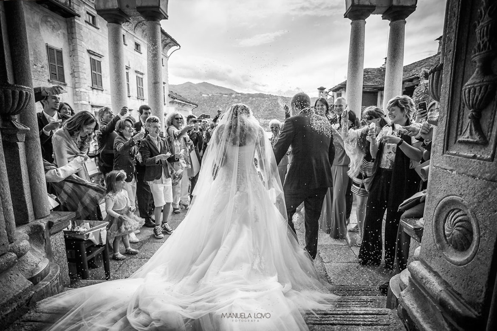
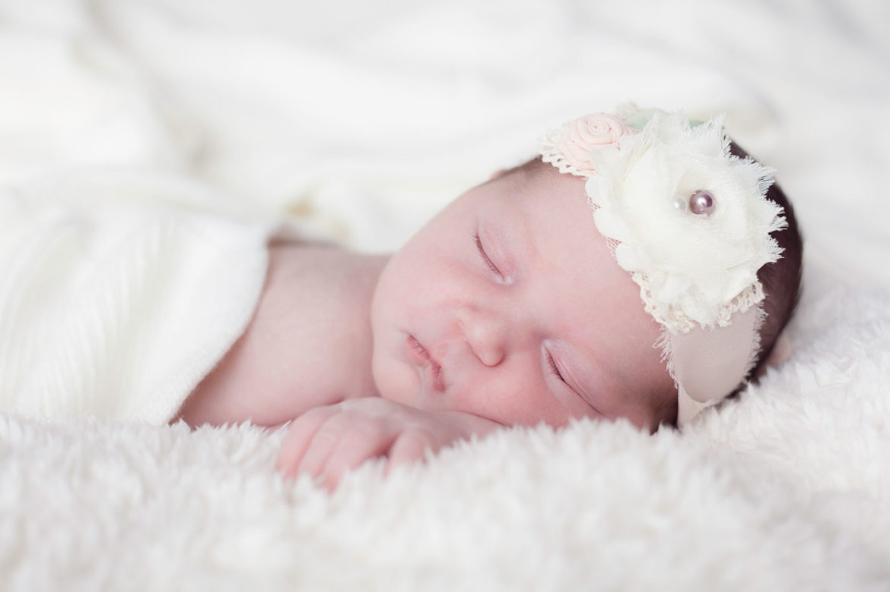
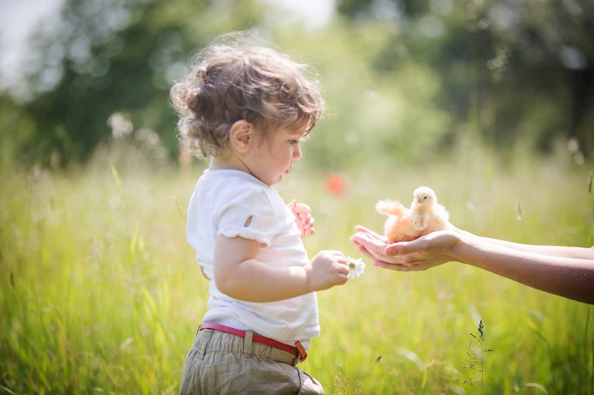
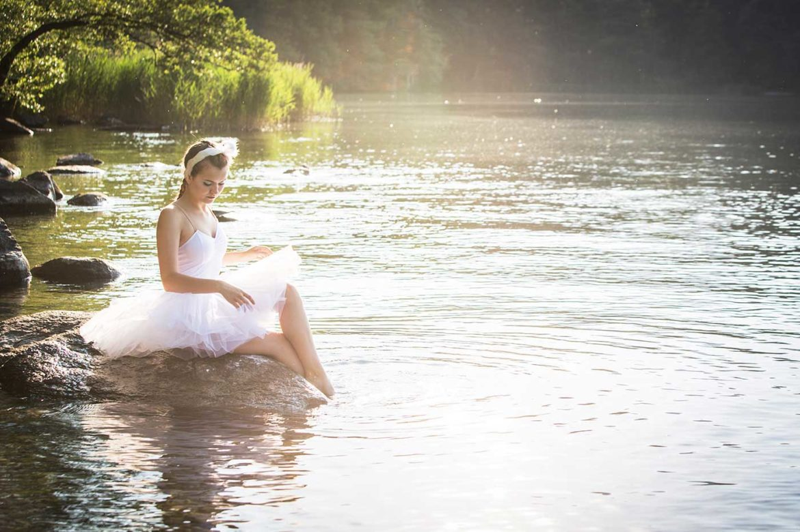
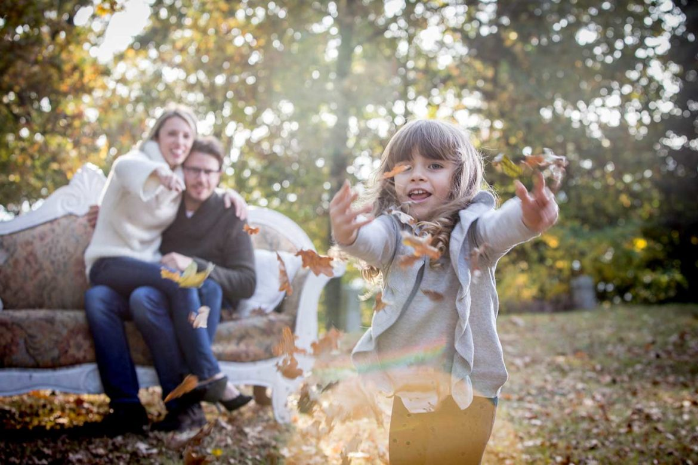
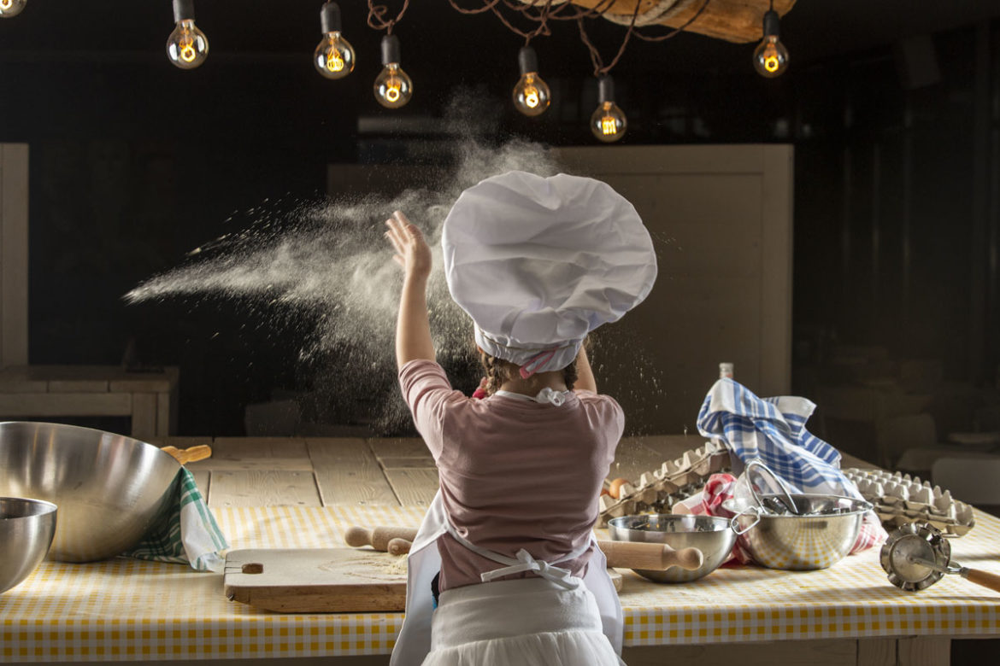
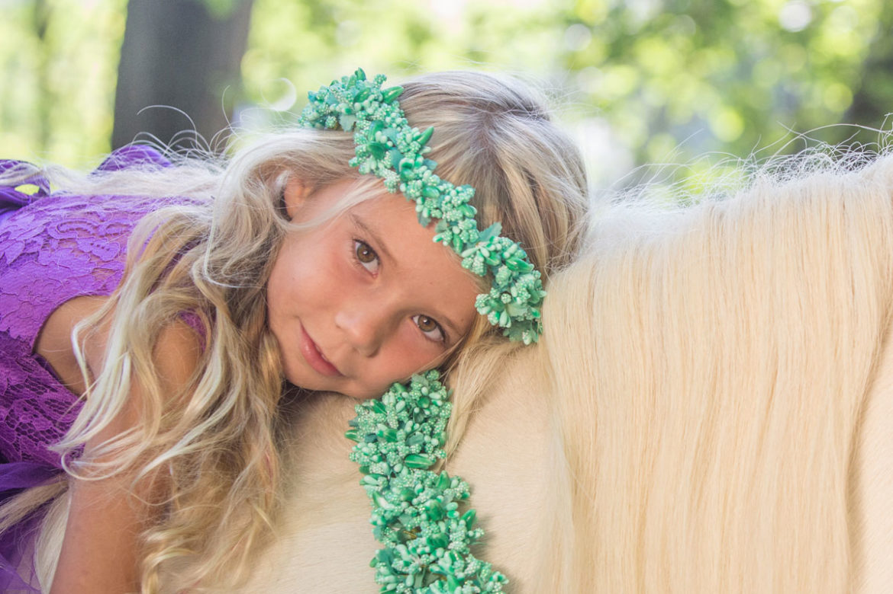

Fotografa di matrimoni sul Lago d'Orta e Lago Maggiore







"È un'illusione che le foto si facciano con la macchina... si fanno con gli occhi, con il cuore, con la testa."
– Henri Cartier-Bresson
Manuela Lovo
Fotografa sul Lago d'Orta e Lago Maggiore
Ho iniziato a fotografare con una piccola compatta rossa a rullino, probabilmente in terza elementare, ce l’ho ancora quella macchina, ho una foto recente di mia figlia mentre la usa.
Sposarsi sul Lago d’Orta o sul Lago Maggiore significa scegliere un luogo capace di rendere tutto ancora più speciale. Perché un giorno possiate guardare quelle fotografie e ritrovarvi tra la bellezza del lago e le emozioni di quel momento.
Fotografa di matrimoni sul Lago Maggiore, Lago d’Orta ed entroterra piemontese
La fotografia è come una catapulta, una macchina del tempo, ti permette di tornare in una frazione di secondo a provare emozioni e pensieri che credevi di aver chiuso in qualche cassetto. Ti permette di far tornare alla mente l’atmosfera, i suoni, i profumi… dare un colore a un ricordo.
Express Yourself è un’esperienza personale che attraverso il ritratto fotografico ti consentirà di acquisire una nuova consapevolezza del tuo io, quella parte di te più profonda ma anche inaspettata.
Il teatro, la danza, un mondo completamente diverso. L'eleganza del movimento insieme alla forza e alla tecnica sono le caratteristiche che amo ritrarre.
Le Collezioni non sono un semplice servizio fotografico, sono un'esperienza, un laboratorio, un viaggio nel tempo, un incontro magico...un momento di condivisione per te e il tuo bambino. Le collezioni sono sempre diverse, uniche e irripetibili come il momento che stai vivendo. Non sono valutabili in termini di durata ma di valore nel tempo.
Con la stessa passione ho da poco iniziato a fornire un servizio di fotografia architetturale orientata alle location ed ai loro interni, nel quale oltre ad offrire le ormai classiche interior offro una tipologia di foto più "emotiva" , magari meno orientata al didascalico ma di sicuro impatto ed in grado di incuriosire la clientela.


![Ever dreamt of a wedding on Lake Como? A&S made their dream come true with a two day event, a pizza party the night before and a civil ceremony at Villa Cipressi followed by the wedding dinner and disco. Two of the highlights was the photosoot in Villa Monastero and the beautiful boat ride admiring the stunning views of Bellagio and Varenna, living the italian dream. Everyone loved the experience, planned by Verbano Events! Get inspired for your big day! WP @verbanoevents @federicazambonini
Location @hotelvillacipressi
Dj @mr_tambourinedj
Content creator @coreweddingcontent
Violinist @violin_kate_show
Flower @valentinacortesewp
Sparklers @gfgpyro
Boats @taxiboatvarenna
Hair @lafemmealapage
Muah @lucreziabianchini_wedding
First look location @villamonastero_official](asset/instagram-feed/18466160302057224.jpg)
![Fiorella e Giacomo Quando ho iniziato a lavorare nel mondo del wedding (ormai 17 anni fa) i matrimoni superavano spesso i 100 invitati… Oggi la maggioranza non supera gli 80 ma…
con Fiorella e Giacomo abbiamo superato i 200 🤩 Il matrimonio dei record! 🥰 Location @regina.palace.hotel
Fiori @emozioni_fiorite
Abiti @nicolemilanoofficial @giorgioarmani
Musica @mariannavalloggia
MUA @iltempiodinefer_ @palzola_gorgonzola @poletti_giacomo Lago Maggiore wedding
Fotografo di matrimonio
Sposi
Regina Palace
Sposi lago maggiore](asset/instagram-feed/17877401154174051.jpg)

![Quante cose, quanti luoghi, quante emozioni si possono provare in un solo giorno? Tre provincie, due regioni in tutto 200 km fatti per il matrimonio in vigna di Sara e Andrea. Abbiamo riso, pianto, il sole ci accolto e la pioggia ci ha sorpreso ma non so davvero come spiegare la meraviglia. Stai organizzando il tuo matrimonio, chiamaci per tempo, noi ti accompagneremo ovunque, lasciati ispirare dalle nostre foto. Location @cantinapidrin
Allestimenti @e20lab.laboratoriocreativo
Torta @pasticceriamanuelina
Abiti @atelieralexander @gilmodauomo
@animalplantnature9 Matrimonio in vigna
Sposi in vigna
Idee sposi
Sposi 2025](asset/instagram-feed/17902895979026452.jpg)

![Samantha e Andrea… abbiamo aspettato tanto questo momento, fotografare il vostro matrimonio!
Dopo tanti anni di foto insieme, set di Natale, amicizia. Abbiamo visto crescere Guglielmo e ci sentiamo parte della vostra famiglia. Sposarsi in età adulta con una consapevolezza diversa, un piccolo uomo che ha vissuto con voi ogni istante del vostro giorno e non solo! Tutti i preparativi, le decisioni importanti e un posto in prima fila accanto a voi. Vi ringraziamo per averci coinvolto fin dal primo momento, di aver condiviso con noi la scelta dei fornitori e aver seguito i nostri consigli. Tanto love. Ecco una piccola anteprima a sorpresa per voi. Location @cascina_capitanio
Abiti @antoniorivamilano @ateliereme
WP @progettoemozione
Fiori @erica.flower.studio
Dj @jeppodj
@matrimonioincarta Idee matrimoni
Consigli matrimonio
Fotografo matrimonio
Sposi
Italian wedding](asset/instagram-feed/18062608453638356.jpg)
![La coppia più giovane di quest’anno, una storia da raccontare. Ogni matrimonio è unico proprio come la storia di chi lo vive. Vogliamo che ogni foto sia vostra e solo vostra. Il nostro obiettivo non è solo scattare ma creare qualcosa di bello insieme, di significativo e unico. Location @parcolecicogne1
Fiori @ifioridifrancy_francesca
Musica @matrimoniemusica_official
Abiti @comeinunafavola_official @barbutiofficial
Hair @guagliardo_chiara_golden_hairs
Makeup @giuliaantonioli.mua Fotografo matrimonio
Momenti unici
Wedding
Matrimoni italiani
Idee matrimonio](asset/instagram-feed/18037624030929335.jpg)